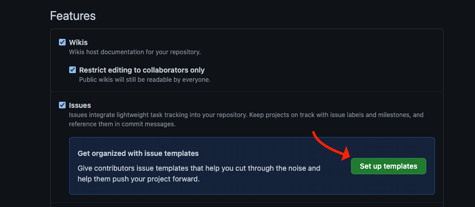
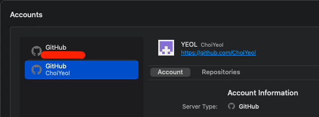
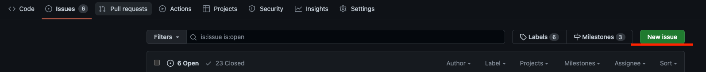
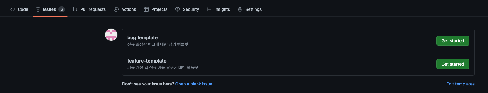
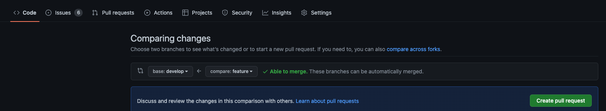

<meta charset="utf-8">
<html lang="ko">
<head>
    <link rel="stylesheet" type="text/css" href="./../style.css" />
    <title>[ Git ] 프로젝트 만들때 git 설계 - YEOL</title>
</head>
<body id="tt-body-page" class="">
<div id="wrap" class="wrap-right">
    <div id="container">
        <main class="main ">
            <div class="area-main">
                <div class="area-view">
                    <div class="article-header">
                        <div class="inner-article-header">
                            <div class="box-meta">
                                <h2 class="title-article">[ Git ] 프로젝트 만들때 git 설계 - YEOL</h2>
                                <div class="box-info">
                                    <p class="category">ETC/Git</p>
                                    <p class="date">2022-08-22 17:38:50</p>
                                </div>
                            </div>
                        </div>
                    </div>
                    <hr>
                    <div class="article-view">
                        <div class="contents_style">
                            <h4 data-ke-size="size20">?<span>&nbsp;</span><b>환경&nbsp;</b></h4>
<p data-ke-size="size16">&nbsp;</p>
<h4 data-ke-size="size20">? <b>개요</b></h4>
<p data-ke-size="size16">git을 어떻게 사용하면 가독성, 효율성 등을 고려하며 설계하기!</p>
<h4 data-ke-size="size20">?<span>&nbsp;</span><b>목차</b></h4>
<ul style="list-style-type: disc;" data-ke-list-type="disc">
<li>git 초기 세팅</li>
<li>git flow 브랜치</li>
<li>issue, bug, pr</li>
</ul>
<p data-ke-size="size16">&nbsp;</p>
<h2 data-ke-size="size26"><b>- git 초기 세팅</b></h2>
<ol style="list-style-type: decimal;" data-ke-list-type="decimal">
<li>git 프로젝트 생성하기</li>
<li>해당 git issue template bug랑 feature 만들기 (이미지 참조)</li>
<li>git tool 통해 clone 받기<br />계정이 2개일 경우 설정에서 추가(저는 git fork 툴 사용)</li>
<li>브랜 치명이 prod인 브랜치 생성하고 그 브랜치 사용<br />나중에 dev, feature 브랜치를 추가 <span>,<span>&nbsp;</span></span><span>staging는 optional</span>&nbsp;</li>
</ol>
<p><figure class="imageblock alignCenter" style="width: 45.2548%; margin-right: 10px;" width="451" height="197" data-origin-width="927" data-origin-height="405" data-is-animation="false" data-widthpercent="45.79">
    <span data-lightbox="lightbox">
        
    </span>
    <figcaption></figcaption>
</figure><figure class="imageblock alignCenter" style="width:53.58243523412839%" data-origin-width="645" data-origin-height="238" data-is-animation="false" data-widthpercent="54.21">
    <span data-lightbox="lightbox">
        
    </span>
    <figcaption></figcaption>
</figure></p>
<div>
<p data-ke-size="size16">&nbsp;</p>
<h2 data-ke-size="size26"><b>- git flow 브랜치</b></h2>
<p data-ke-size="size16"><span style="font-family: -apple-system, BlinkMacSystemFont, 'Helvetica Neue', 'Apple SD Gothic Neo', Arial, sans-serif; letter-spacing: 0px;">아래가 사용할 브랜치들입니다. 필요한 경우 늘리거나 제거합니다.<br /></span><span style="font-family: -apple-system, BlinkMacSystemFont, 'Helvetica Neue', 'Apple SD Gothic Neo', Arial, sans-serif; letter-spacing: 0px;"></span></p>
</div>
<ol style="list-style-type: decimal;" data-ke-list-type="decimal">
<li>prod: 실제 배포되어있는 서비스 브랜치</li>
<li>dev: feature에서 pr 받을 배포 이전 단계의 테스트 브랜치</li>
<li>feature-issue#1: 새로운 기능을 추가할 때 git의 issue number를 추가하여 생성할 브랜치</li>
<li>hotfix-issue#1: prod에서 문제가 생겼을 경우 생성할 브랜치</li>
<li>staging: prod와 가장 흡사한 환경에서 테스트하는 브랜치<br />(서드파티에서 prod와 dev의 리턴 값이 다르거나 dev에서만 테스트가 가능할 경우 의미가 퇴색될 수 있는 브랜치)</li>
</ol>
<p data-ke-size="size16">feature -&gt; dev, hotfix -&gt; prod 순서로 prod가 가장 상위의 브랜치입니다.<br />하위에서 상위로 pr을 날리고 테스트하고 그위로 pr을 날리는 구조이며 hotfix나 dev에서 일부 수정할 경우<br />rebase를 통해 기존 브랜치의 base를 변경된 값으로 따라갑니다.</p>
<p data-ke-size="size16">&nbsp;</p>
<div>
<h2 data-ke-size="size26"><b>- issue, bug, pr</b></h2>
<p data-ke-size="size16"><span>issue나 bug, pr 등의 문서적 정리는 해당 프로젝트의 git 홈페이지에서 관리합니다.</span></p>
<figure class="imageblock alignCenter" style="width: 64.3413%; margin-right: 10px;" data-origin-width="1595" data-origin-height="164" data-is-animation="false" data-widthpercent="65.1">
    <span data-lightbox="lightbox">
        
    </span>
    <figcaption></figcaption>
</figure><figure class="imageblock alignCenter" style="width: 34.4959%;" data-origin-width="1606" data-origin-height="308" data-is-animation="false" data-widthpercent="34.9">
    <span data-lightbox="lightbox">
        
    </span>
    <figcaption></figcaption>
</figure><figure class="imageblock alignCenter" >
    <span data-lightbox="lightbox">
        
    </span>
    <figcaption></figcaption>
</figure>
<p data-ke-size="size16"><span>이슈의 경우에는 생성할 때 생기는 number를 늘 활용해줍니다.</span><span></span></p>
<p data-ke-size="size16">&nbsp;</p>
</div>
<p data-ke-size="size16"><b><span style="background-color: #ffffff; color: #555555;">? 근거 있는 조언은 언제나 환영합니다</span><span style="background-color: #ffffff; color: #555555;">. 성실한 코딩</span><span style="background-color: #ffffff; color: #555555;"><span>&nbsp;</span>하세요.</span></b></p>
                        </div>
                        <br/>
                        <div class="tags">
                            #git branch #git flow #git flow 란 
                        </div>
                    </div>
                </div>
            </div>
        </main>
    </div>
</div>
</body>
</html>
